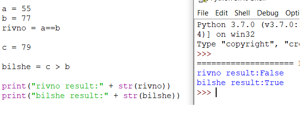
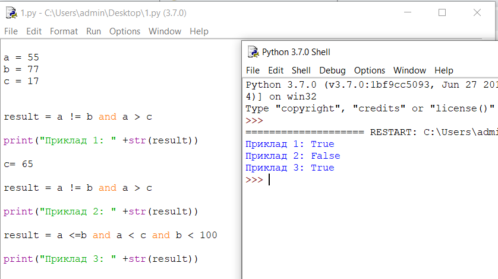
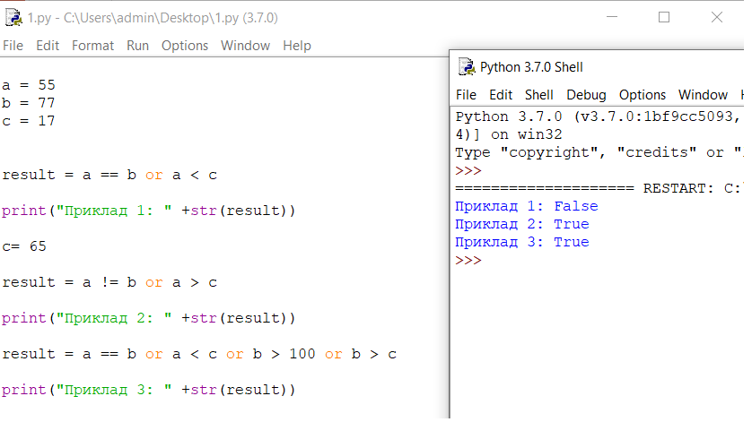
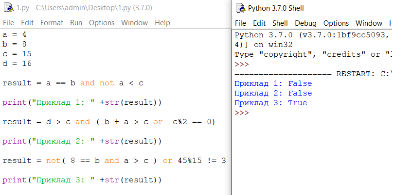

Логічна перевірка та логічна змінна
В попередніх уроках, ми навчились писати прості програмі на мові Python. Всі вони складались з
послідовного виконання деяких дій в чіткій послідовності.
Світ в якому ми живемо зазвичай
більш складний і все що відбувається навколо залежить від багатьох факторів. Можливість написати
програму,так щоб в залежності від данних виконати якісь інші обчислення чи не виконувати деяку
частину коду була б дуже помічна.
Як і в математиці ми можемо виконувати різні порівняння над змінними, до них належать:
- Рівність : a == b
- Не рівність: a != b
- Менше рівно : a <= b
- Більше рівно: a >= b
- Більше : a > b
- Менше : a < b
Знаючи значення змінних,над якими ми робимо порівняння,завжди можна сказати результат буде правдою чи брехнею. Таке порівняння можна присвоїти як значення для спеціальної змінної булевого типу. Вона може приймати тільки 2 значення: True(Правда) або False(брехня).
У прикладі ви можете побачити як ми використали 3 змінні для перевірки двох умов і результат цих перевірок. Ми також можемо комбінувати ці умови за допомогою трьох ключових слів: and, or та not. Зупинимось на кожному з них детальніше.
Ключові слова and, or та not
Ключове слово and дозволяє поєднувати між собою декілька логічних виразів. Результат такого об'єднання набуде значення True тільки якщо кожен з виразів,що входить в об'єднання має значення True.
Ключове слово or працює так само як and. Результат такого об'єднання набуде значення True якщо хоча б один з виразів, що входить в об'єднання має значення True. Як і для оператора and, між собою може бути поєднадо безліч логічних виразів.
Ключове слово or працює так само як and. Результат такого об'єднання набуде значення True якщо хоча б один з виразів, що входить в об'єднання має значення True. Як і для оператора and, між собою може бути поєднадо безліч логічних виразів.
Оператор not застосовується трішки по іншому: він ставиться на початку, тобто перед логічним виразом, надаючи йому при цьому протилежного значення. Тобто, вираз not 4 > 8 буде приймати значення False (протилежний до значення виразу 8 > 4). Взагалі не дуже часто використовують цей оператор окремо, так як вираз not 4>8 можна замінити на протилежний логічний вираз (в даному випадку 4<8). Та все ж його часто застосовують із іншими операторами. Для прикладу вираз not 4>8 and 4>3 буде мати значення True (not 4 > 8 = True, 4 > 3 = True).
Ми також можемо комбінувати між собою логічні умови використовуючи декілька логічних операторів. При цьому для того щоб вказати яка перевірка має виконатись першою, її огортають у дужки.
Зауваження: У випадку порівняння якогось значення і змінною, хороші програмісти спочатку запишуть значення. Це повязано з тим що оператор порівняння == і присвоєння значення = дуже схожі, тому випадково не поклавши один знак можна витратити купу часу на пошук проблеми в програмі і чому вона не працює.
Зауваження: Якщо нам необхідно перевірити чи змінна а більше змінної b і менше змінної c це можна записати через and у вигляді: b < a and a < c або скористатись вбудованою в Python функцією ланцюгової перевірки виразів і записати це як b < a < c
Якщо ...